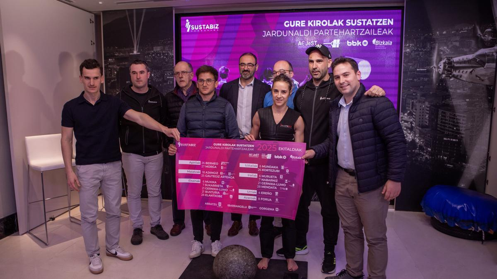
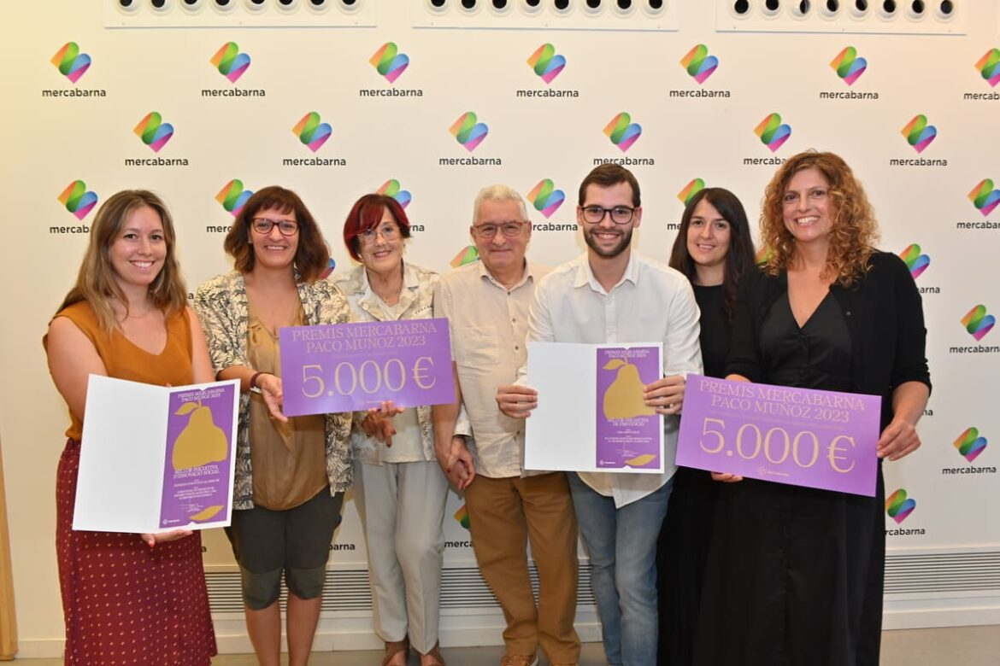
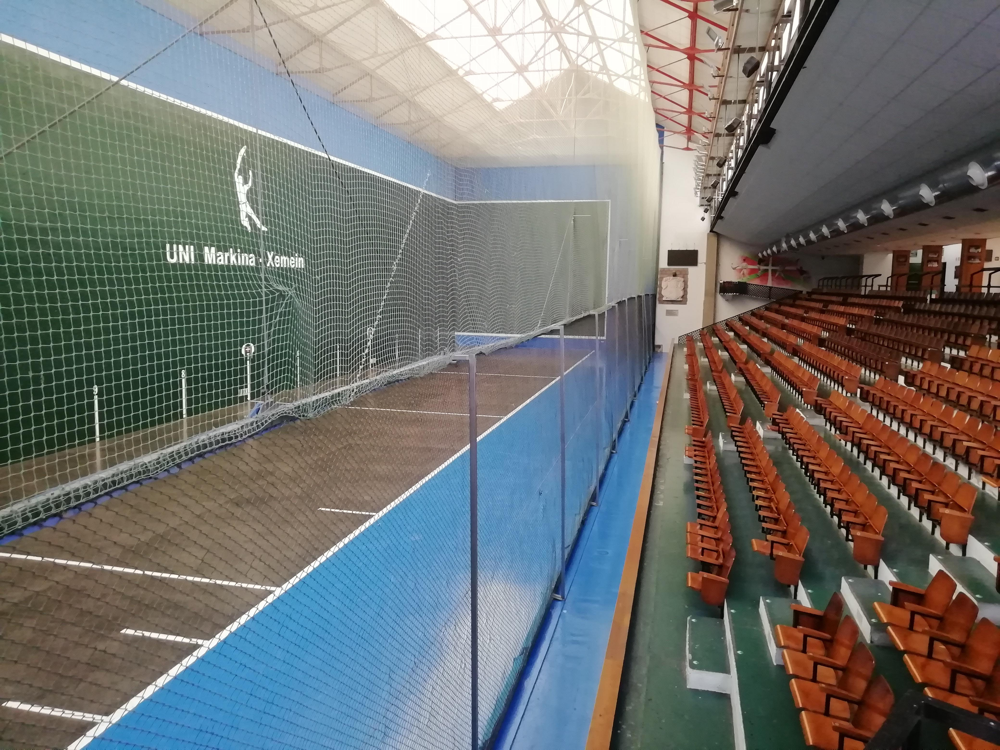
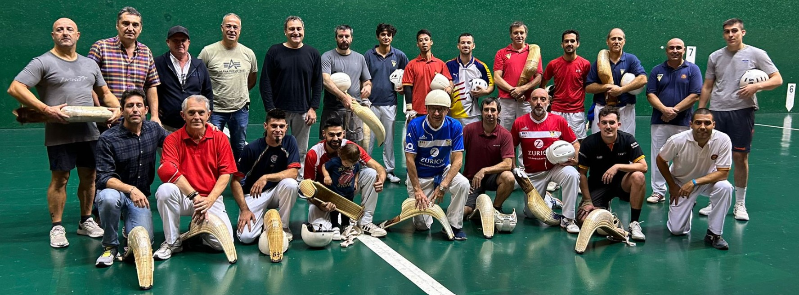

El Club Gernikako Arbola Frontoia es una entidad deportiva y cultural dedicada a mantener viva la tradición de la cesta punta en Gernika-Lumo, corazón del País Vasco. Nuestro objetivo es formar nuevas generaciones de pelotaris, difundir este deporte único en el mundo y conservar el espíritu que une historia, técnica y pasión. Desde nuestros inicios, trabajamos para que el frontón siga siendo un punto de encuentro entre la tradición y el futuro, ofreciendo formación, competiciones y actividades abiertas a la comunidad. El club se sostiene gracias a un modelo de colaboración entre instituciones públicas, patrocinadores privados y la propia comunidad deportiva. Este equilibrio nos permite mantener nuestras escuelas, organizar torneos y representar con orgullo a Gernika y a Euskadi en el ámbito internacional. Más que un club, somos una familia unida por la cesta punta, comprometida con la cultura vasca, la formación de jóvenes y la promoción del deporte como valor de identidad y convivencia.
Financiamiento del Club :
El Club Gernikako Arbola Frontoia tiene como objetivo mantener viva la práctica de la cesta punta y formar nuevas generaciones de pelotaris. Para lograrlo, su funcionamiento económico depende de varias fuentes de financiamiento, tanto públicas como privadas.
1. Subvenciones públicas :
El club recibe apoyos institucionales de:
- El Ayuntamiento de Gernika-Lumo
- La Diputación Foral de Bizkaia
- El Gobierno Vasco (Kirolak, programas deportivos)
Estas subvenciones se utilizan para el mantenimiento del frontón, apoyar escuelas deportivas, financiar competiciones y cubrir seguros y equipamiento.
2. Patrocinios privados :
El club también cuenta con patrocinadores, es decir, empresas que aportan dinero o material a cambio de publicidad.
- Eusko Label — patrocina torneos profesionales.
- Negocios locales (bares, tiendas, cooperativas y entiendas bancarias) que apoyan con publicidad en camisetas, carteles o el frontón.
Este tipo de financiamiento ayuda a cubrir los costes de organización de torneos, uniformes y desplazamientos de los pelotaris.
3. Ingresos propios del club :
El club obtiene dinero por medio de:
- Cuotas de los alumnos de la escuela.
- Venta de entradas y abonos.
- Alquiler del frontón para eventos.
- Demostraciones turísticas y visitas guiadas.
Estos ingresos permiten mantener las actividades diarias sin depender solo de ayudas públicas.
4. Actividades culturales y sociales :
El club promueve la cesta punta mediante talleres, torneos escolares, intercambios culturales, ferias deportivas y colaboración con agencias turísticas.
Estas actividades pueden generar ingresos pequeños pero refuerzan la visibilidad y el apoyo comunitario.
Un compromiso con la tradición y el deporte :
El Club Gernikako Arbola Frontoia se financia mediante un modelo mixto una parte importante viene de instituciones públicas, otra de patrocinios privados, y el resto de ingresos propios generados por la escuela y los eventos. Este equilibrio permite que el club mantenga viva la tradición de la cesta punta y forme nuevas generaciones de pelotaris, asegurando que el Gernikako Arbola Frontoia siga siendo un emblema deportivo y cultural en Euskadi.